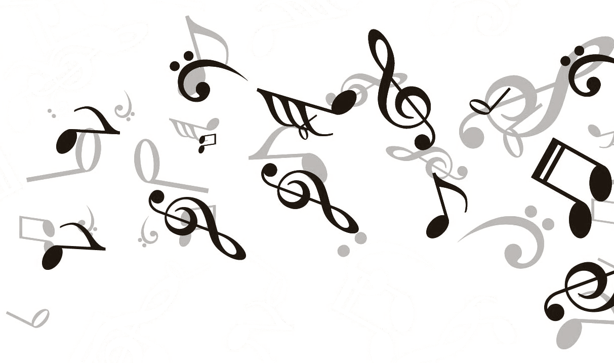
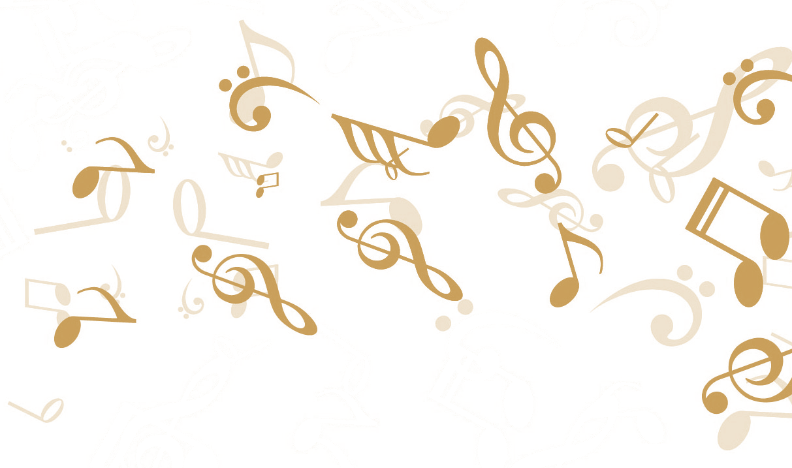
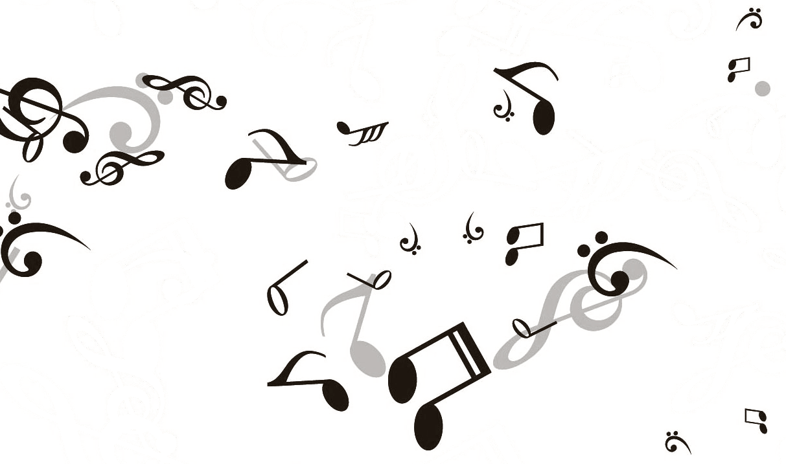
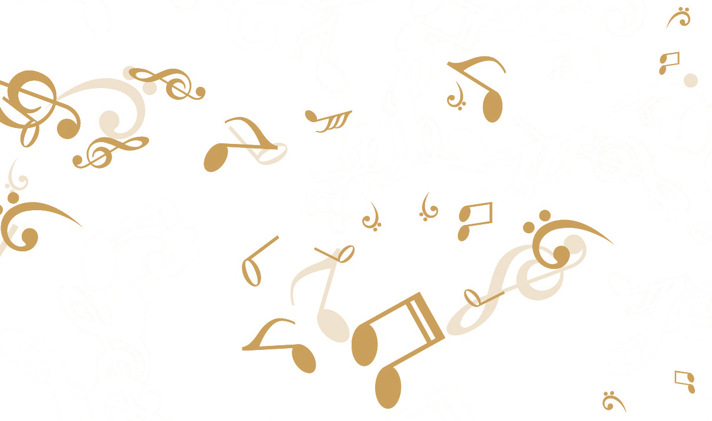
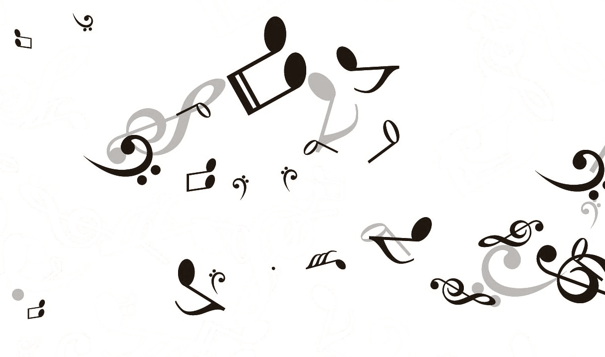
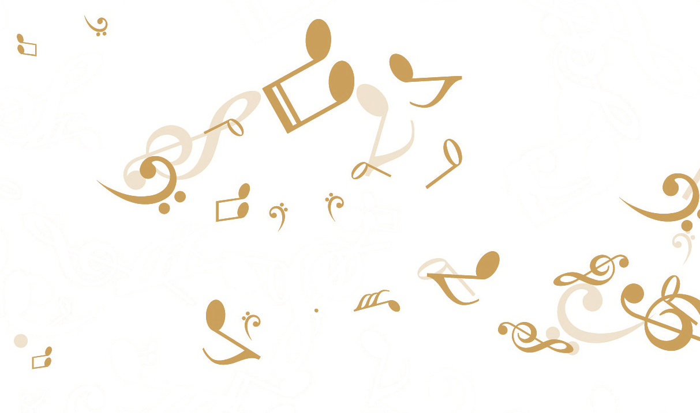
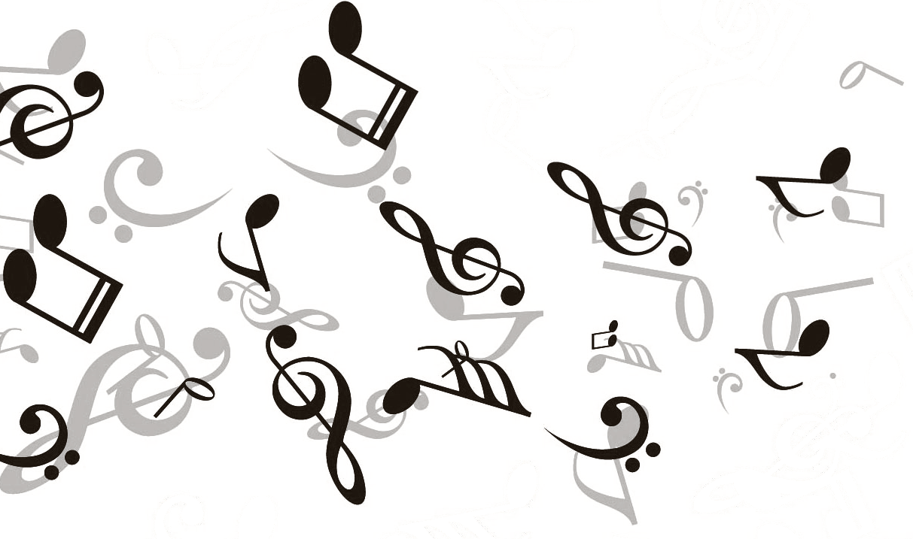
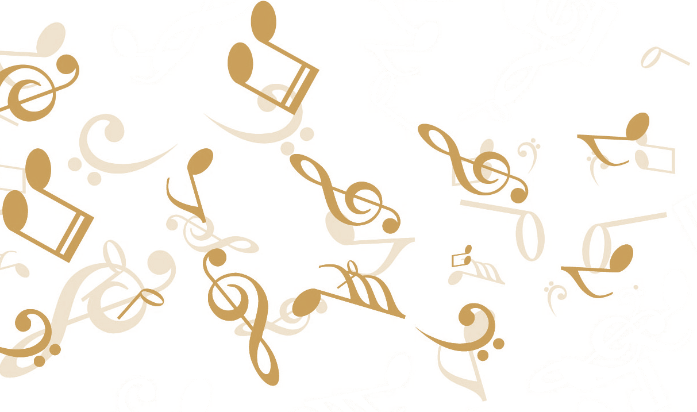

“One gets caught up in Azizian’s perfected intense violin sound”
Henrik Friis, Politiken
Armenian-born Danish violinist (b. 1986) is an acclaimed soloist and chamber musician, known for her rich sound, intensity and virtuosity.
At the young age of 17 she had already won her first international competition — 1st prize at the prestigious Jeunesses Musicales competition in Bucharest, Romania.
Loussine's debut album "Obsession" with the acclaimed Danish pianist, Berit Johansen Tange was released from Walkway Records in June 2015, including works by E. Ysaÿe, N. Schmidt, A. Babadjanian and A. Khachaturian, and received excellent reviews.
Read full storyLoussine has been featured on…

The discography of Loussine Azizian consists of two studio albums — debut solo record “Obsession” and “Four Seasons” as soloist with the Scandinavian Chamber Soloists Ensemble.

Antonio Vivaldi - The four Seasons, Astor Piazolla - Las Estaciones Porteñas
Get the record now
Digital recordings are available on all major platforms - iTunes, Amazon etc.
Get the record nowOne gets caught up in Azizian’s perfected intense violin sound
Henrik Friis, Politiken, 22. sept 2015
You can send a message to Loussine using the form.